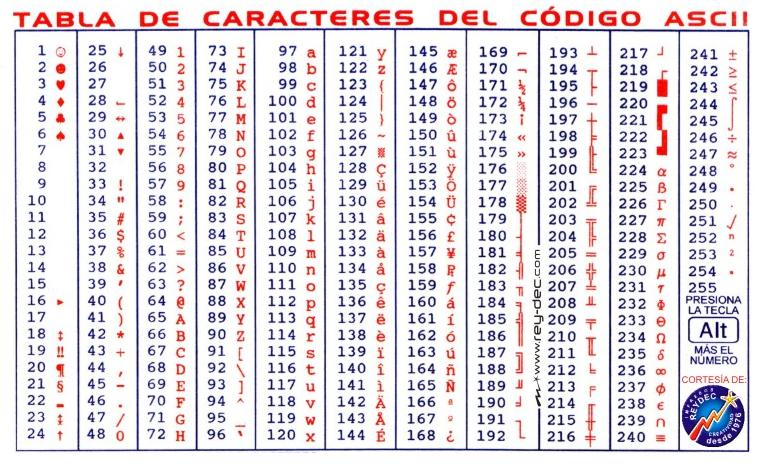
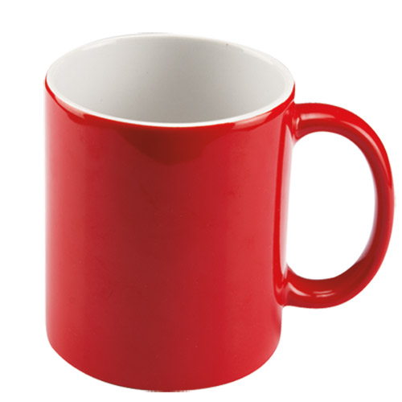

Las cadenas de caracteres son indispensables en el desarrollo de casi cualquier aplicación. Vayamos al inicio del concepto.
Un caracter es la unidad mínima de información que corresponde aproximadamente con un grafema o con una unidad o símbolo parecido, como los del alfabeto o silabario de la forma escrita de un lenguaje natural.1
Un ejemplo de caracter es una letra, un número o un signo de puntuación. El concepto también abarca a los caracteres de control, que no se corresponden con símbolos del lenguaje natural sino con otros fragmentos de información usados para procesar textos, tales como el retorno de carro y el tabulador, así como instrucciones para impresoras y otros dispositivos que muestran dichos textos (como el avance de página). 1
Un caracter es un dato que puede ser letras del abecedario (a, b, c,..., z), dígitos (0, 1, 2, ..., 9) o símbolos especiales (#, $, ^, *, %, /, !, etc.). Existen 256 caracteres basicos que las computadoras pueden manejar, esta lista de caracteres tiene el nombre de código ASCII (American Standard Code for Information Interchange — Código Estándar Estadounidense para el Intercambio de Información).
Enxiste un tipo de dato especial para caracteres. Un dato tipo caracter contiene un solo símbolo (caracter) y se escribe entre apóstrofe. Ejemplo:
'a' 'B' '$' '9' '-' '@' '#'
Cabe mencionar que los caracteres solo tienen valor como símbolo, no de otro tipo. Por esta razón ocurre lo siguiente:
'9' != 9
Esto ocurre debido a que '9' es un caracter, es decir un símbolo sin valor numérico, mientras que 9 representa el valor numérico de nueve. Por esa razón
es que son diferentes ya que uno de ellos es un símbolo y el otro es un número.
Para entender la diferencia considere lo siguiente. Observe la imágen a continucación y responda la pregunta: ¿qué es?

Si usted respondió: "una taza", lamento decir que está equivocado. En realidad es una fotografía de una taza. Una cosa es la taza y otra cosa diferente es la fotografía
de la taza. Esa misma diferencia existe entre los símbolos y lo que representan, misma diferencia entre el caracter '9' y el número 9.
Por otro lado, existen las cadenas. Un tipo de dato cadena de caracteres es un conjunto de caracteres, y típicamente se escribe entre comillas. Este tipo de dato se llama así debido a la forma como los caracteres se acomodan, uno tras otro, como un tren de caracteres. Ejemplo:
"abcde" "cadena de caracteres" "Hola Mundo" "12345" "abc123"
En Gambas existe un tipo de Datos para manejar caracteres y cadenas: String. Para declarar una variable que contendrá caracteres o cadenas, se hace de la misma forma que
cualquier variable. La sintaxis es la siguiente:
Dim cadena As String
En los lenguajes de programación se le llama concatenación a la acción de juntar una cadena a otra, sería lo equivalente a sumarlas.
Ejemplo 1. Desarrollar un programa que solicite nombre, apellido y edad. Posteriormente imprima esta información en una sola línea.
Public Sub Main()
Dim nombre, apellido As String
Dim edad As Byte
Print "Introduzca su nombre: ";
Input nombre
Print "Introduzca su apellido: ";
Input apellido
Print "Introduzca su edad: ";
Input edad
Print "Hola "; nombre; " "; apellido; ", usted tiene "; edad; " años."
End
Observe que se han declarado dos variables como String: nombre y apellido. Se declara además una tercera variable edad como
Byte. Posteriormente se solicita la información al usuario. Observe como concatena el programa todas las cadenas para imprimirlas en pantalla. En términos generales,
cuando algo se imprime en pantalla se convierte al tipo de dato String independientemente del tipo de dato que sea.
Existen funciones especiales para el manejo de cadenas en Gambas, algunas de ellas son CStr y Str para convertir una expresion en una
cadena de caracteres; mientras que Val convierte una cadena de caracteres en un valor numérico.
Ejemplo 2. Convertir el valor númerico de una variable a una cadena de caracteres con la función Str e imprimir el resultado.
Public Sub Main()
Dim nombre, edad, cadena As String
Dim x As Byte
nombre = "Carlos"
x = 20
edad = Str(x)
cadena = "Mi nombre es " & nombre & " y tengo " & edad & " años"
Print cadena
End
Observe que en este ejemplo se utilizó la función Str para convertir la edad, que se encontraba en una variable tipo Byte.
Posteriormente se formó la cadena a imprimir utilizando la concatenación a través del operador &.
Ejemplo 3. Convertir la cadena "123" en entero utilizando la función Val, luego sume ese número con 321.
Public Sub Main()
Dim cadena As String
Dim x As Float
cadena = "123"
x = Val(cadena)
Print "La suma es: "; x + 321
End
Observe que la variable cadena se le asignó la cadena de caracteres "123", posteriormente y utilizando la función Val, se
convierte en el número 123 y se almacena en la variable x tipo Byte. Justo donde está el Print,
y antes de imprimirse en pantalla, se hace la suma del valor convertido y contenido en x con el número 321. Por lo tanto
se imprime el número 444.